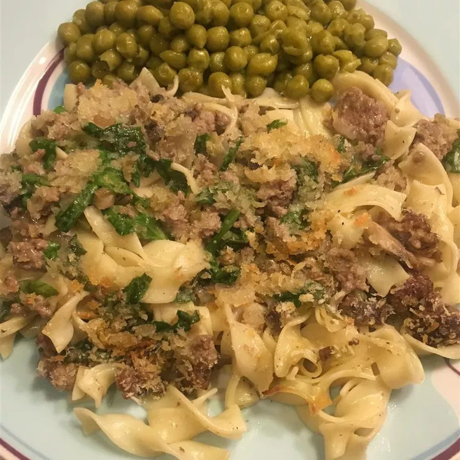

Tasty hamburger dish the whole family will love!
Description
A classic hamburger dish made with cream of mushroom soup and pasta. A
dish no one will be able to resist! Use your favorite hamburger meat and
mix up this easy to create masterpiece of a meal.
An easy to prep meal that bakes in the oven while you take care of other
tasks!
Ingredients
1 tablespoon butter for greasing, or as needed
1 (8 ounce) package egg noodles
1 pound ground beef
1 onion, chopped
1 cup diced celery
1 (10.5 ounce) can condensed cream of mushroom soup
1 (10.5 ounce) can condensed cream of chicken soup
1 (4.5 ounce) can mushrooms
1/2 cup milk
1/2 cup salted cashews
Steps
Preheat the oven to 350 degrees F (175 degrees C). Grease a casserole
dish with butter. Arrange uncooked noodles in the prepared dish.
Heat a large skillet over medium-high heat. Cook and stir beef, onion,
and celery in the hot skillet until beef is browned and crumbly, 5 to 7
minutes; drain and discard grease.
Stir condensed soups, mushrooms, and milk into beef mixture until evenly
combined; pour over noodles in the dish. Cover the dish with aluminum
foil.
Bake in the preheated oven for 30 minutes. Remove aluminum foil and
sprinkle cashews on top; continue baking until bubbling, about 30
minutes more.